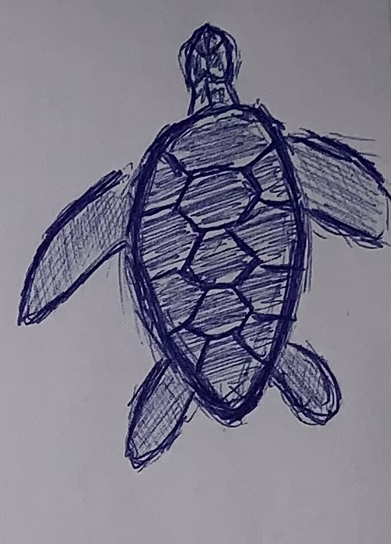
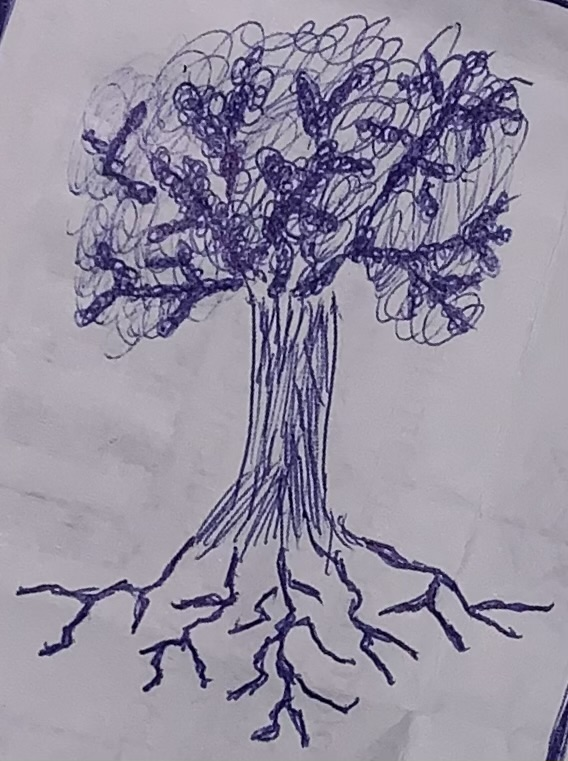
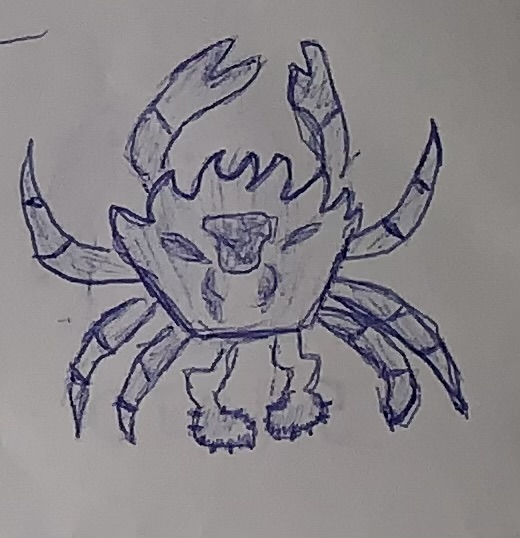
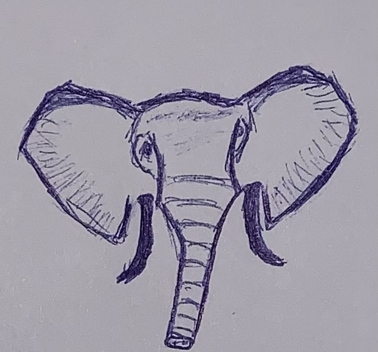
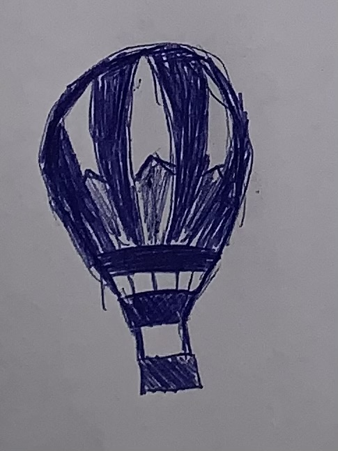
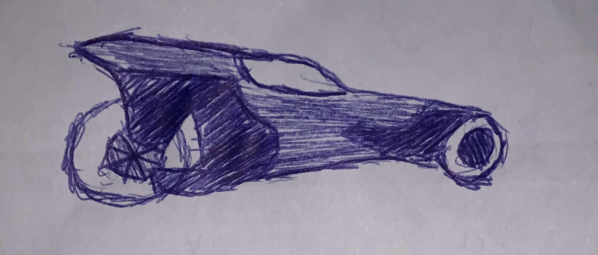
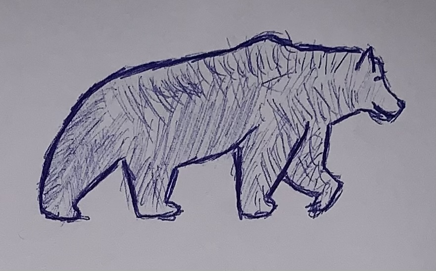
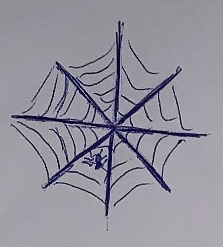

Independent app development, science-policy research, and consulting — plus long-form writing on the systems behind medical breakthroughs. All under one roof.
Long-form analysis of bioscience breakthroughs, systems thinking, and science policy.
Software I've built, including frúto, an iOS app live on the App Store.
The researcher, writer, and systems thinker behind this work.
Sketches








Acknowledgements
This project would not have been possible without the tools and resources that made the research, writing, and building of this site feasible for a single student. Thank you to Claude (Anthropic) for research assistance, writing support, and help constructing this website; Notion for organizing and storing the knowledge base behind every post; Google for search, Scholar, and the countless papers and sources that informed this work; and the University of Pittsburgh for its library resources, academic access, and the education that made it possible to engage with this material in the first place.
On a personal note: thank you to my mom, my cousin Gabriel, and my friend Hagen for amazing and inspiring conversations that shaped how I think about these topics. And to the Senior Knuckle Head Brigade and its entire extended family — thank you for the conversation, nourishment, distraction, and support while this project was being built. You know who you are.
Bioscience breakthroughs, systems thinking, and the policy conditions that make science happen.
Software I've built — mostly with Claude, mostly to scratch my own itch first.
A produce price tracker for iOS. Log what you pay for fruits and vegetables, watch how prices move over time, and know when you're actually getting a good deal. Built end-to-end with Claude, backed by Firebase.
📱 Download on the App StoreEvery price comes from a shopper logging what they actually paid, not a retailer feed. The data reflects real receipts, and no single user's activity can skew it.
Shows what's actually in season right now, so "cheap" and "in season" line up instead of paying peak price for something shipped in off-season.
Current best prices and what's in season, right on your home screen. No need to open the app just to check.
Browse and submit recipes built around seasonal, well-priced produce. Comments from other users turn it into cooking suggestions tied to what's actually affordable.
Build your grocery list inside the app, tied to the same price data, so planning a shop and tracking the cost happen in one place.
OCR reads prices straight off a photographed receipt. Logging what you paid doesn't mean typing it in by hand.
An expansion on the idea behind Snapchat Memories. Record an obscure, specific memory as a short video or voice note, tag the people who were there, and let it resurface again later instead of disappearing into a camera roll.
Sharing runs on CloudKit. Tagging someone adds them directly to an iCloud share, the same mechanism behind Apple's own Shared Photo Library, so there's no backend to maintain and no accounts to manage.
Speech-to-text runs entirely on-device, using Apple's own on-device recognizer. What gets said in a private memory never goes to a server, including mine.
Memories that share a person, a place, or a close date link into an album on their own. No folders to build or maintain by hand.
A rotating prompt and a "remember this?" card bring old memories back into view, so they don't just sit untouched after the day they were made.
Voice memories are captured clean, then processed afterward with on-device noise reduction, EQ, and loudness normalization. A before/after toggle means nothing gets altered without your say.
A one-tap export builds a real archive of video, audio, and a browser-playable page. Save it to iCloud Drive or copy it onto a physical drive; it doesn't depend on the app staying installed.
A to-do list app built for the way I actually plan: one app, built once, that runs natively on both iPhone and Mac and stays in sync between them.
A single codebase compiles into a native iPhone app and a genuine Mac app, not a scaled-up phone screen. iCloud keeps the two in sync.
Paste or dictate a messy wall of everything on your mind. It gets parsed into separate tasks, dates and locations picked out automatically, then handed back to you to review and approve.
That parsing happens entirely on-device. No AI model, no network call — just instant, and it keeps working with no signal.
Tasks live in user-created sections and projects, cut across by tags. Drag-to-reorder and multi-select bulk editing make cleaning up a list fast.
A Today widget shows what's due right on the home screen, pulling from the same live data as the full app rather than a stale snapshot.
Smaller projects and experiments. Some are apps, some are just tools I built to solve my own problem.
An offline kitchen inventory app. On-device computer vision and barcode scanning recognize groceries as you put them away, then it suggests recipes from what's actually in the fridge, prioritizing whatever's about to expire.
Two takes on simulating the Big Bang. One is a physically rigorous cosmology sandbox where you tweak the actual constants of physics and watch galaxies form from a real-time particle simulation. The other is a playful arcade version where a universe can run all the way through stars, life, and civilizations before heat death.
A hand-built exploration and story game in a Great-Wave, ukiyo-e art style. The world is built inside the corpses of skyscraper-sized insects that all died in a single night.
A pair of terminal assistants I built for myself. One reads receipts and bank statements to track spending; the other searches federal grant databases for open funding and pulls contact information. Both run entirely on a free, open-source model on my own machine: no subscription, no API key, nothing sent to the cloud.
The researcher and writer behind Corinthian Technologies Incorporated.
I'm Corin Winikoff, a physics student in the Frederick Honors College at the University of Pittsburgh and the founder of Corinthian Technologies Incorporated. My academic interests span mathematics, engineering, the life sciences, and public health. What holds them together is a persistent question: how do government, industry, and institutions shape the systems that determine outcomes for people?
CTI is where I try to think through those questions seriously, and where everything else I build lives too. The blog started with bioscience, out of a conviction that the most important breakthroughs aren't just scientific events. They're the product of funding structures, regulatory decisions, institutional cultures, and individual researchers working inside systems that either enable or obstruct them. That same lens now extends past the blog into independent app development, science-policy research, and consulting work, all under the same roof.
Outside of research, I'm an avid reader, writer, and critical thinker who wants to explore as much of the world and its opportunities as possible. I'm drawn to problems at the edge of multiple disciplines, the kind that don't fit cleanly inside any single department or framework.
Physics major, mathematics minor — expected graduation 2028. Pursuing an interdisciplinary education across science, policy, and the humanities.
Corinthian Technologies Incorporated is the home for everything I build and write: independent app development, science-policy research, consulting, and this site's blog and long-form work all live under it.
Languages & tools: Swift & SwiftUI · Python (data analysis, plotting) · LaTeX · AutoCAD (basic)
Other: Public speaking · Technical writing · Systems thinking · Science policy · Long-form writing · Critical analysis